Cinemática: física - Queda Livre
O movimento vertical de um corpo próximo ao solo é chamado de queda livre quando o corpo é abandonado no vácuo ou se considera desprezível a ação do ar. Seu estudo é idêntico ao de um lançamento na vertical, o qual difere da queda livre somente por apresentar uma velocidade inicial vertical e eles são descritos pelas mesmas funções horárias. A aceleração do movimento vertical de um corpo no vácuo é denominada aceleração da gravidade e indicada por G. Como o movimento se realiza nas proximidades da superfície terrestre, a aceleração da gravidade é considerada constante. Assim, a queda livre e o lançamento na vertical são movimentos uniformemente variados (MUV).
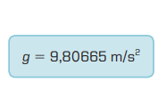Esse é o valor da aceleração da gravidade, tomado ao nivel do mar e a latitude de 45 graus. Na queda, o módulo da velocidade escalar do corpo aumenta: o movimento é acelerado. Lançado verticalmente para cima, o módulo da velocidade escalar diminui na subida: o movimento é retardado
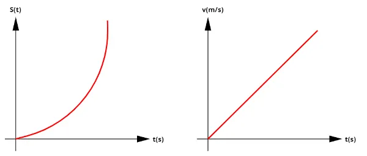À medida que o corpo lançado verticalmente para cima sobe , sua velocidade escalar decresce em módulo até se anular na altura máxima. Nesse instante ocorre mudança do sentido do movimento e o móvel passa a descer em movimento acelerado.
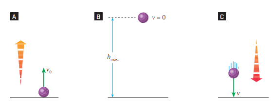Estudemos os sinais da velocidade escalar e da aceleração escalar segundo convenções algébricas. Para isso, orientamos a trajetória para cima (A). Segundo essa orientação, a velocidade escalar é positiva na subida e negativa na descida(B). Na subida, o movimento é retardado e a aceleração escalar é negativa, pois v e a devem ter sinais contrários(C) . Na descida, o movimento é acelerado e a aceleração escalar contínua negativa, pois a e v devem ter o mesmo sinal (D).
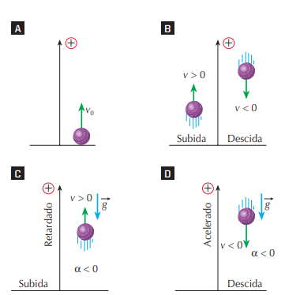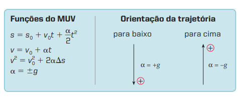
Gráficos do MU e do MUV
Construções gráficas com duas variáveis são feitas no chamado plano cartesiano. É o plano constituído por dois eixos x e y, perpendiculares entre si, que se interceptam num ponto denominado origem (A). A um ponto P associamos um par ordenado (x, y) de números reais, chamado coordenadas do ponto P (B). A coordenada x é chamada abscissa do ponto P (C) e a coordenada y é a ordenada de P (D).
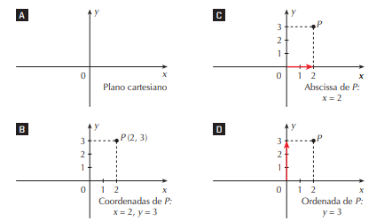Função constante
É a função do tipo y 5 k, sendo k um número real. Exemplos: Y=5; Y= -3.0. O gráfico de uma função constante é uma reta paralela ao eixo x que passa pelo ponto (X=0,Y=K). Quando um ponto material está em repouso (por exemplo, no km 100 de uma rodovia), seu espaço S é constante com o tempo . A velocidade escalar V de um movimento uniforme é uma função constante com o tempo, bem como a aceleração escalar a de um MUV.
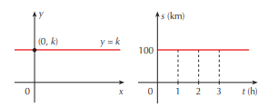Função do 1º grau
Função do 1º grau é a função da forma y = a 1 + bx, na qual a e b são números reais, sendo b ≠ 0. O gráfico de uma função do 1º grau é uma reta que passa pelo ponto (0, a).
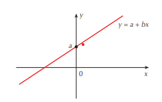Função do 2º grau
Função do 2º grau é a função da forma y = a + bx 1 cx2 , na qual a, b e c são números reais, sendo c≠0. O gráfico de uma função do 2º grau é uma parábola. Se o coeficiente c é positivo, a parábola tem concavidade voltada para cima (A) se c é negativo, a concavidade é voltada para baixo (B).
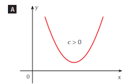Coeficiente angular da reta
Na função do 1º grau y = a + bx, o número real b é chamado coeficiente angular da reta representada no plano cartesiano. O coeficiente angular b está associado ao ângulo J entre a reta e o eixo x.
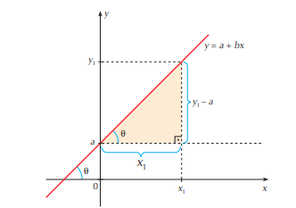Cálculo de áreas
No movimento uniforme, a velocidade escalar é uma função constante com o tempo. Nesse gráfico, a área A é numericamente igual à variação do espaço (S) no intervalo de tempo t1 a t2.
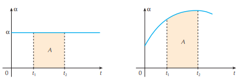Essa propriedade é válida em qualquer tipo de movimento. No gráfico da velocidade escalar em função do tempo,a área A da região delimitada pela curva e pelo eixo das abscissas é numericamente igual à variação do espaço (S) do móvel nesse intervalo de tempo.
No movimento uniformemente variado (MUV), a aceleração escalar é uma função constante com o tempo. Nesse gráfico, a área A é numericamente igual à variação da velocidade V no intervalo de tempo t1 a t2.
Essa propriedade é válida em qualquer tipo de movimento. No gráfico da aceleração escalar em função do tempo, a área A da região delimitada pela curva e pelo eixo das abscissas é numericamente igual à variação da velocidade (V) do móvel nesse intervalo de tempo.
Exercícios
1.(Unitau-SP)) Um modelo de foguete é impulsionado
verticalmente para cima, com a aceleração constante de 50 m/s2.
O motor para de funcionar após
4 s do lançamento. Em que altura está o foguete,
quando o motor para?
a)100 m
b)250 m
c)300 m
d)350 m
e)400 m
a) 100 m: Esse valor é muito baixo para a aceleração de 50 m/s² durante 4 segundos. A altura calculada foi de 400 m, então 100 m não corresponde ao resultado correto.
b) 250 m: Similar ao item anterior, esse valor também é inferior ao resultado correto de 400 m. Com uma aceleração de 50 m/s², o foguete percorre uma distância muito maior do que 250 m em 4 segundos.
c) 300 m: A altura de 300 m é mais próxima, mas ainda está abaixo de 400 m. Esse valor é inferior ao cálculo correto, que leva em conta a aceleração de 50 m/s² por 4 segundos.
d) 350 m: Também está abaixo da resposta correta de 400 m. Embora a distância seja maior que 300 m, ainda não corresponde à altura correta que o foguete alcança, que é 400 m.
2.(Unitau-SP) Na questão anterior, desprezando a
resistência do ar e usando g 5 10 m/s2,podemos
dizer corretamente que a altura máxima atingida
pelo foguete é:
a)1.800 m
b)2.400
c)3.000
d)3.500
e)4.000
3.(UFSM-RS) Um corpo é atirado verticalmente para
cima, a partir do solo, com uma velocidade de
20 m/s. Considerando a aceleração gravitacional
g 5 10 m/s2 e desprezando a resistência do ar, a
altura máxima, em metros, alcançada pelo corpo é:
a) 15
b) 20
c) 30
d) 60
e) 75
a) 15 m: Este valor é muito baixo para a velocidade inicial de 20 m/s. Com essa velocidade, o corpo deve atingir uma altura maior. A resposta correta é 20 metros.
c) 30 m: Esse valor é maior do que o necessário. Com a aceleração gravitacional de 10 m/s² e a velocidade inicial de 20 m/s, o corpo não alcançaria essa altura. A altura máxima é 20 metros, não 30 metros.
e) 75 m: Este valor é ainda mais alto do que o esperado. A altura máxima calculada é 20 metros, o que torna 75 metros incorreto.
d) 60 m: Novamente, a altura máxima atingida seria muito menor do que 60 metros. A altura correta, como calculado, é 20 metros.
4. (UFRJ) Um corpo em queda livre percorre uma certa
distância vertical em 2 s; logo, a distância percorrida em 6 s será:
a) dupla
b) tripla
c) seis vezes maior
d) nove vezes maior
e) doze vezes maior
b) tripla: A distância não é três vezes maior, porque, conforme mencionado, a distância em queda livre é proporcional ao quadrado do tempo. Em 6 segundos, a distância é 9 vezes maior, não 3 vezes.
c) seis vezes maior: A distância percorrida não é seis vezes maior, pois a relação é quadrática. O tempo triplicado resulta em uma distância 9 vezes maior, não 6 vezes.
e) doze vezes maior: Este valor também está incorreto. A distância percorrida é 9 vezes maior e não 12 vezes.
5. (Mackenzie-SP) ) Joãozinho abandona do alto de
uma torre um corpo a partir do repouso. Durante
a queda livre, com g constante, ele observa que
nos dois primeiros segundos o corpo percorre a
distância D. A distância percorrida pelo corpo nos
4 s seguintes será:
a) 4D
b) 5D
c) 6D
d) 8D
e) 9D
a) d/3: A distância percorrida no terceiro segundo é 5 vezes maior que a distância percorrida no primeiro segundo, e não um terço da distância.
b) 3d: Embora a distância percorrida no terceiro segundo seja maior, ela não é exatamente 3 vezes a distância do primeiro segundo. A distância é 5 vezes maior, e não 3.
d) 7d: A distância percorrida no terceiro segundo não é 7 vezes a distância do primeiro segundo, mas sim 5 vezes.
e) 9d: A distância percorrida no terceiro segundo não é 9 vezes a distância do primeiro segundo, mas sim 5 vezes.
6.(Uece)) Em um circo, um malabarista lança bolas,
verticalmente para cima, que atingem uma altura
máxima h. No caso de jogá-las para que elas fiquem
o dobro do tempo no ar, a nova altura máxima
será:
A) 2h
B) 4h
C) 6h
D) 8h
c) 6h: A relação entre o tempo de voo e a altura máxima não é linear, ou seja, dobrar o tempo não resulta em 6 vezes a altura. A resposta correta é 4 vezes a altura, não 6.
d) 8h: Para dobrar o tempo de voo, a altura máxima não aumenta 8 vezes. A relação entre tempo de voo e altura máxima é quadrática, logo a altura será 4 vezes maior, não 8.